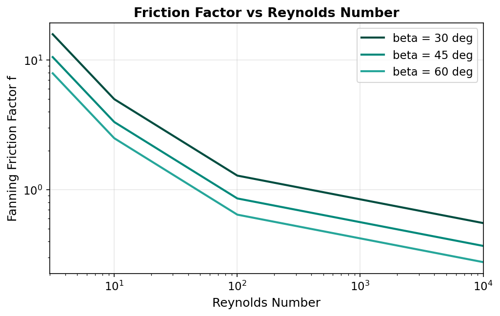

Pressure Drop¶
Overview¶
Pressure drop is a critical design parameter for plate heat exchangers, directly affecting pumping power requirements and operating cost. The corrugated plate geometry that enhances heat transfer also increases frictional losses compared with smooth channels. This unit operation uses the Kumar (1984) friction factor correlation with a chevron angle correction to predict the channel-side pressure drop for each stream.
Friction Factor Correlation¶
Kumar (1984) Correlation¶
The Fanning friction factor for flow through chevron-corrugated channels is expressed as a piecewise power-law function of the Reynolds number (Kumar, 1984):
where the coefficients \(a\) and \(p\) depend on the flow regime:
| Regime | Reynolds Range | Coefficient \(a\) | Exponent \(p\) | Flow Character |
|---|---|---|---|---|
| 1 | \(\text{Re} < 10\) | 50 | 1.000 | Laminar (Hagen-Poiseuille type) |
| 2 | \(10 \le \text{Re} < 100\) | 19.4 | 0.589 | Transitional |
| 3 | \(\text{Re} \ge 100\) | 2.99 | 0.183 | Turbulent |
Regime 1 — Laminar Limit
In the fully laminar regime (\(\text{Re} < 10\)), the friction factor follows the classical inverse-linear relationship \(f = 50/\text{Re}\), analogous to the Hagen-Poiseuille result \(f = 16/\text{Re}\) for smooth circular tubes but with a higher coefficient reflecting the tortuous corrugated flow path.
Chevron Angle Correction¶
The base friction factor coefficients above correspond to a reference chevron angle of \(\beta_{\text{ref}} = 30\) degrees. For other chevron angles, the friction factor is adjusted by the ratio (Kumar, 1984):
where \(\beta\) is the actual chevron angle in degrees.
Chevron Angle Effect
Higher chevron angles (\(\beta > 30^\circ\)) produce stronger secondary flows and more intense mixing, which increases both heat transfer and pressure drop. The correction factor \(30/\beta\) reduces the friction factor for high chevron angles relative to the base correlation, reflecting the empirical observation that the Kumar (1984) base coefficients already account for significant turbulence promotion at \(\beta = 30^\circ\).
Channel Pressure Drop¶
The frictional pressure drop through the plate channels is calculated from:
where:
| Symbol | Description | Units |
|---|---|---|
| \(f\) | Fanning friction factor (corrected for chevron angle) | — |
| \(L_p\) | Effective plate length (between port centres) | m |
| \(D_h\) | Hydraulic diameter, \(D_h = 2b/\phi\) | m |
| \(G\) | Mass velocity, \(G = \dot{m}/(N_{ch} \cdot b \cdot W)\) | kg/m\(^2\)/s |
| \(\rho\) | Fluid density at mean bulk temperature | kg/m\(^3\) |
The factor of 4 appears because the Kumar correlation provides the Fanning friction factor; the product \(4f\) equals the Darcy friction factor used in the standard Darcy-Weisbach equation.
Density Evaluation
The fluid density \(\rho\) is evaluated at the arithmetic mean of the inlet and outlet bulk temperatures. For fluids with strong temperature-dependent density (e.g., gases), this approximation may introduce error. The iterative solver recalculates \(\rho\) at each convergence step to mitigate this effect.
Port Pressure Losses¶
In addition to the channel frictional losses, pressure drops occur at the inlet and outlet ports (nozzles) of the plate pack. Port losses arise from sudden expansion, contraction, and flow distribution effects as the fluid enters and exits the narrow channels.
A common engineering estimate for the port pressure loss is (Kakac & Liu, 2002):
where \(G_{\text{port}} = \dot{m} / A_{\text{port}}\) is the mass velocity through the port opening.
Implementation
The current implementation focuses on the channel frictional pressure drop as the dominant contribution. Port losses are typically 10--30% of the channel losses for well-designed PHEs and can be included as an additional user-specified term if needed.
Typical Pressure Drops¶
Representative pressure drops for plate heat exchangers in common services:
| Service | Flow Velocity (m/s) | \(\Delta P\) Range (kPa) |
|---|---|---|
| Water -- water (cooling) | 0.3 -- 0.8 | 20 -- 80 |
| Water -- glycol (HVAC) | 0.2 -- 0.6 | 30 -- 100 |
| Light oil -- water | 0.2 -- 0.5 | 40 -- 120 |
| Organic solvent -- water | 0.3 -- 0.7 | 25 -- 90 |
Design Trade-off
Increasing the number of plates \(N_p\) reduces the mass velocity \(G\) per channel, which decreases both the heat transfer coefficient and the pressure drop. The optimal design balances thermal performance against allowable pressure drop.
Friction Factor Coefficient Summary¶
The complete set of friction factor parameters used in this implementation:
| Regime | \(\text{Re}\) Range | \(a\) | \(p\) | Expression | Chevron Correction |
|---|---|---|---|---|---|
| 1 | \(\text{Re} < 10\) | 50 | 1.000 | \(f = 50 / \text{Re}\) | \(\times\,(30/\beta)\) |
| 2 | \(10 \le \text{Re} < 100\) | 19.4 | 0.589 | \(f = 19.4 / \text{Re}^{0.589}\) | \(\times\,(30/\beta)\) |
| 3 | \(\text{Re} \ge 100\) | 2.99 | 0.183 | \(f = 2.99 / \text{Re}^{0.183}\) | \(\times\,(30/\beta)\) |
The corrected friction factor for any regime is:
This value is substituted into the channel pressure drop equation to obtain \(\Delta P\) for each stream independently.
